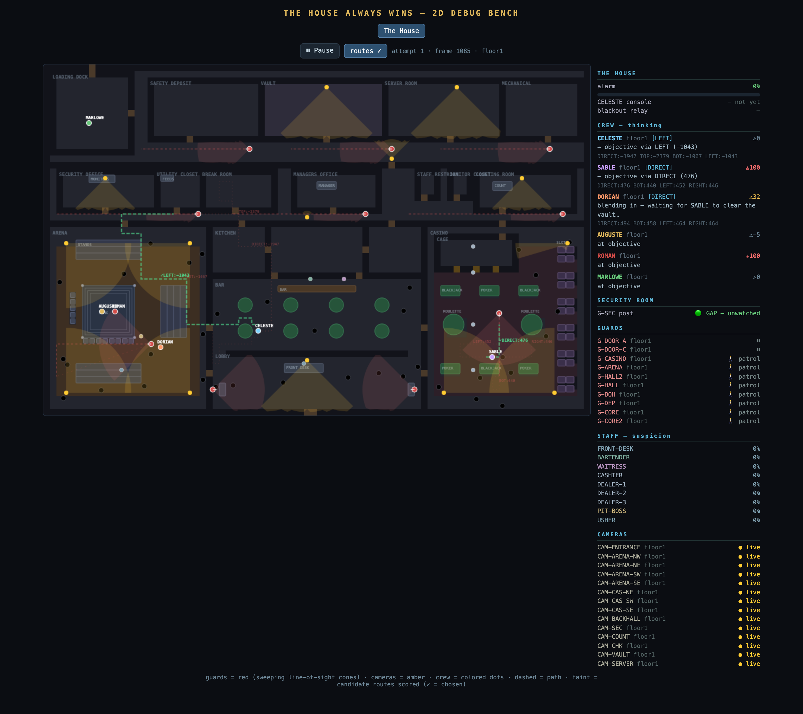

Six AI crew autonomously rob a casino — and the casino tries to stop them. Every decision is the AI's; you don't control anyone. You watch. They can win or lose, and the house always keeps its edge — so no run is guaranteed.
You don't move anyone. You witness a crew of six AI characters break into a casino while the casino's guards, cameras, and milling crowd react — every plan, every close call, every moment a single guard glancing the wrong way blows the whole thing. When a run goes wrong it starts over, and you watch the crew try again: a montage of attempts converging on a clean score.

The god's-eye view above is a building-and-testing tool — made to keep every decision legible and auditable so the heist can be tuned and proven frame by frame. It is not the final look. The planned presentation layer is a cinematic 3D casino — the same heist, rendered as a film you'd actually watch.
The heart of the heist: in the arena, a staged pit fight draws a roaring crowd. Deep in the secure core, the explosives expert blows the vault. The whole job lives or dies on one question of timing — at the instant the charge goes off, is the crowd loud enough to swallow it?
roar > boom → the city hears a fight · boom > roar → the alarm, and the run is over
It's the title rendered as a mechanic. The crew can stack the odds — time the charge to the fight's peak, cut the outside phone line so a late noise rings only inside — but they can never make it certain. The house keeps its edge.
| Name | Role | Job |
|---|---|---|
| CELESTE | Conductor / hacker | Taps the security camera feeds, then guides the crew through, back, or around |
| SABLE | Safecracker | Reaches the vault and cracks it |
| DORIAN | Explosives | Follows SABLE to the vault, one at a time |
| AUGUSTE & ROMAN | The fighters | The staged fight — the crowd they draw is the cover |
| MARLOWE | Driver | Waits at the truck on the dock — the way out |
On the public floor the crew are just guests — guards and cameras don't faze them. The danger only begins past the service wall.
In the back-of-house and secure core, one guard sighting (or an uncovered camera) ends the run. No slow meter — caught is caught.
The crew never step into a vision cone in a secure area. They wait for it to sweep past, route around it, or back off; gates open only when a guard steps away on break.
Each attempt plays differently. Caught → restart → try again, until a run threads the needle. You're watching a crew learn the building.
The House Always Wins is an instance of the MoreSalamander Deterministic Scaffold thesis. The AI proposes — each crew member reasons about where to go, which route is safest, when to move. A deterministic core disposes — who can see whom, when a gate is open, whether a sighting is a fail are exact, seed-locked, and identical every run. The brain is the player; the scaffold is the referee. Two things follow:
Every decision is exposed in the thinking panel, so you can always answer why — why SABLE held, why CELESTE rerouted DORIAN, why the run failed.
The house genuinely keeps its edge. The crew get better at reading the building across attempts, but the math never lets them win every time. The tension lives in that gap.